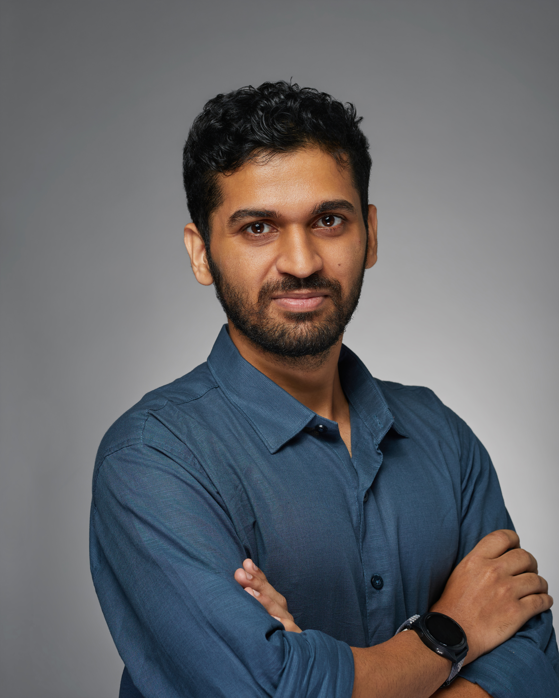

Build & investigate
Experimental setup development, high-intensity laser experiments, and diagnostic systems.
PhD research scholar · TIFR, Mumbai
I’m Ameya, a laser–plasma researcher connecting high-intensity experiments with numerical modelling.
Electron acceleration. Plasma diagnostics. The physics of light meeting matter.

01 / RESEARCH
From physical questions to measurable signalsMy work explores electron acceleration, magnetic-field generation, and shock-wave dynamics in laser-produced plasmas. I combine experiments, diagnostics, and particle-in-cell modelling to study these interactions.
Direct laser acceleration in longitudinal and transverse electric fields, including a practical multi-beam acceleration scheme studied with two-dimensional SMILEI simulations on the TIFR HPC cluster.
Read the preprint ↗Experiments at the 1 PW laser facility at ELI-NP, Romania, investigating directional MeV gamma-ray emission alongside electron, proton, and neutron emission.
Additional contributions to experimental chambers and diagnostics for the new petawatt facility in Hyderabad.
Shock-wave studies with high-contrast 400 nm pulses; laser absorption under varying pulse energy, incidence angle, and prepulse conditions.
Stokes polarimetry for megagauss magnetic fields, pump–probe diagnostics, Doppler-shift measurements, and wavefront sensing.
02 / HOW I WORK
A physicist’s questions. An engineer’s approach.My mechanical engineering background complements my experimental and computational work. These are the capabilities I bring to research teams and technical collaborations.
Experimental setup development, high-intensity laser experiments, and diagnostic systems.
Particle-in-cell simulations and numerical analysis connecting physical mechanisms to experimental observations.
Mechanical design, collaborative problem-solving, and communicating research through papers, posters, and talks.
03 / PUBLICATIONS
Full CV & author lists ↗Research spanning particle acceleration, ultrafast plasma dynamics, and magnetic-field generation. Journal articles and preprints are identified separately.
8 publications displayed
04 / THE PERSON BEHIND THE WORK
An engineering beginning. A physics journey.I came to laser–plasma physics through mechanical engineering. Today, I’m pursuing an integrated PhD in the Department of Atomic and Nuclear Physics at the Tata Institute of Fundamental Research.
My experience brings together numerical models, experimental setups, and diagnostic systems. I’m interested in the conversation between them: what a model predicts, what an instrument can resolve, and what an experiment reveals.
I helped plan and build a Formula Student car and led the steering team for Formula Bharat 2019. It’s a hands-on part of my journey, bringing design, teamwork, and practical problem-solving together.
Outside research, I enjoy bouldering, trekking, and photography — and finding good food along the way.
EDUCATION & EXPERIENCE
Tata Institute of Fundamental Research
Atomic and Nuclear Physics
Contributed to experiments at the 1 PW laser facility.
Mumbai University
Bharati Vidyapeeth College of Engineering
05 / EXCHANGING IDEAS
Presentations, conferences & trainingA selection of presentations and training from my CV, connecting my work with the wider laser and plasma community.
Rochester, USA
IIT (ISM) Dhanbad, India
IPS Academy, Indore, India
Indian Institute of Geomagnetism, Mumbai
Udaipur, India
Salamanca, Spain
Strong Plasma Radiation Interaction Group–II · IIT Delhi
Nuclear Photonics conference · TIFR Hyderabad
Winter School on Intense Science · IIT Jodhpur
Student leadership programme · Rochester, USA
06 / WHAT COMES NEXT
I’m interested in postdoctoral opportunities and research collaborations worldwide, including industry work at the intersection of laser physics, simulation, and experimental development.
parabameya102@gmail.com ↗